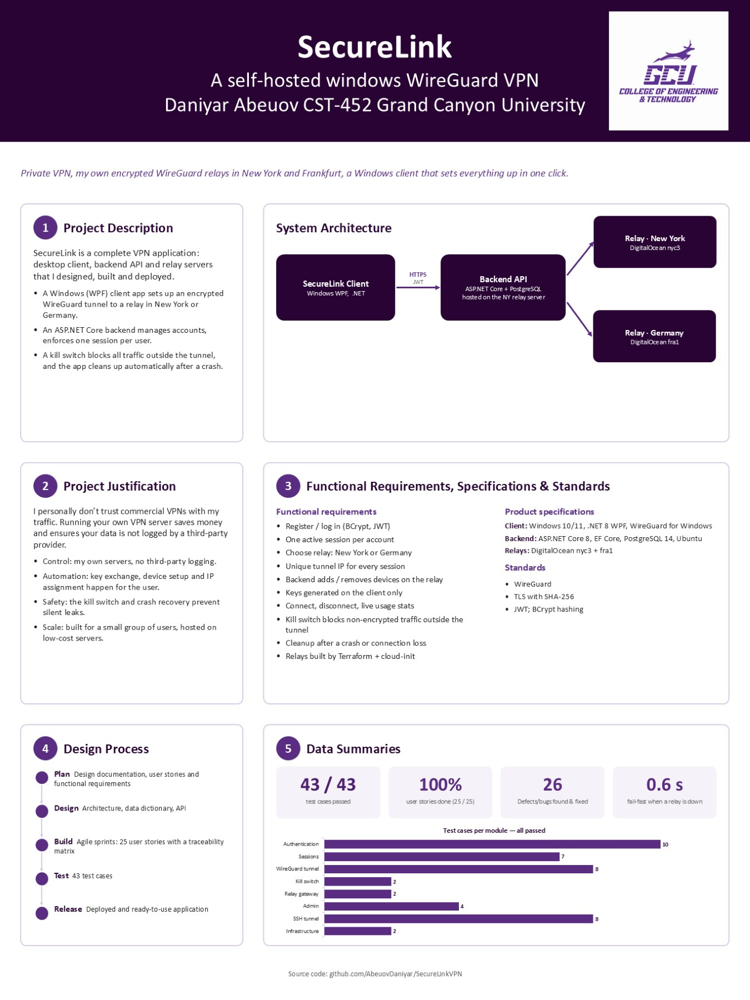

A self-hosted WireGuard VPN for Windows. A desktop client, a backend API and two relay servers that I designed, built, deployed and tested end-to-end.
SecureLink gives a small group of people family and friends, or personal use, private internet access through servers I control, without handing our traffic to a commercial VPN provider.
One button to connect. The app generates WireGuard keys locally, brings up the tunnel, turns on the kill switch, shows live usage, and warns you if the relay stops responding.
Handles accounts with BCrypt-hashed passwords and JWT sign-in, allows one active session per user, assigns tunnel addresses, and registers each device on the relay.
New York and Frankfurt, provisioned with Terraform and cloud-init. Each runs WireGuard plus a small management API that only the backend can reach.
Commercial VPNs ask you to trust a company with all of your traffic. Running your own WireGuard server is private, but it's manual: keys, config files, and nothing to protect you when the tunnel drops.
SecureLink automates the hard parts and adds the safety features a hand-rolled setup lacks.
The client talks to the backend over HTTPS to set up a session, then sends all traffic through an encrypted WireGuard tunnel straight to the chosen relay.
Instead of adding a "block everything" rule (which also blocks the VPN itself), the kill switch changes the firewall's outbound policy to Block and adds two allow rules.
// Allow rules go in before the policy flips so the relay is never blocked.
RunNetshChecked($"advfirewall firewall add rule name=\"{RuleName}-allow-relay\" dir=out action=allow remoteip={relayIp} enable=yes");
RunNetshChecked($"advfirewall firewall add rule name=\"{RuleName}-allow-tunnel\" dir=out action=allow localip={tunnelAddress} enable=yes");
RunNetshChecked("advfirewall set allprofiles firewallpolicy blockinbound,blockoutbound");
If the app dies while connected, the tunnel service and firewall rules keep running without it, and the server still thinks the user is connected. On every launch the client checks for all three leftovers and removes them before the Connect button is enabled.
if (await Task.Run(() => _wireGuard.OrphanedTunnelServiceExists()))
{
Log("Found a leftover tunnel from a previous session — cleaning it up...");
await Task.Run(() => _wireGuard.TearDownTunnel());
}
// Safe to call even if no rules exist — KillSwitchService.Disable() no-ops
// when there's nothing to remove.
await Task.Run(() => _killSwitch.Disable());
var staleSessionId = await _api.GetActiveSessionIdAsync();
if (staleSessionId is Guid sid)
{
Log("Found a leftover active session on the server from last time — closing it out...");
await _api.DisconnectAsync(sid);
}
The crash-recovery test failed the first time it ran. After a crash, the login request went through the leftover tunnel, and .NET kept that connection open for reuse. Cleanup then removed the tunnel, and the very next request reused the dead connection and failed, so the stale session was never closed and the user was locked out with "already connected".
// Open a fresh connection for every request instead of reusing.
_http.DefaultRequestHeaders.ConnectionClose = true;
43 test cases across eight modules, each traced to a requirement and executed against the live deployment, including deliberate failures such as stopping the tunnel to Germany and killing the app mid-connection.
| Module | Cases | Result |
|---|---|---|
| Authentication | 10 | All passed |
| Session management | 7 | All passed |
| WireGuard tunnel | 8 | All passed |
| Kill switch | 2 | All passed |
| Relay gateway | 2 | All passed |
| Admin | 4 | All passed |
| SSH tunnel (Germany) | 8 | All passed |
| Infrastructure | 2 | All passed |
| Measured on the live system | Result |
|---|---|
| Kill-switch leak test | 0 requests leaked |
| Disconnect while a relay is down | 0.6 s, session closed |
| Connect while a relay is down | Clear error in 0.6 s |
| Crash recovery | Leftovers removed, reconnect OK |
| SSH tunnel process killed | Auto-restart in 10.6 s |
| Lost relay detected by the health check | 171 s; recovery in 5 s |
| Defects found and fixed | 7 |
All 21 requirements are met.
The project on one page: description, justification, requirements and standards, design process, and test results.

The client is a Windows desktop app. It asks for Administrator rights when it starts, because it manages a network interface and firewall rules.
client/SecureLink.Clientdotnet build -c ReleaseSecureLink.Client.exe and accept the Windows admin promptgit clone https://github.com/AbeuovDaniyar/SecureLinkVPN.git cd SecureLinkVPN/client/SecureLink.Client dotnet build -c Release bin\Release\net8.0-windows\SecureLink.Client.exe
Want to host your own? The infra/ folder provisions both relays with Terraform, and backend/SecureLink.Api is the API. The README walks through it.
The final presentation, earlier screen recordings of the working system, and the project documents.